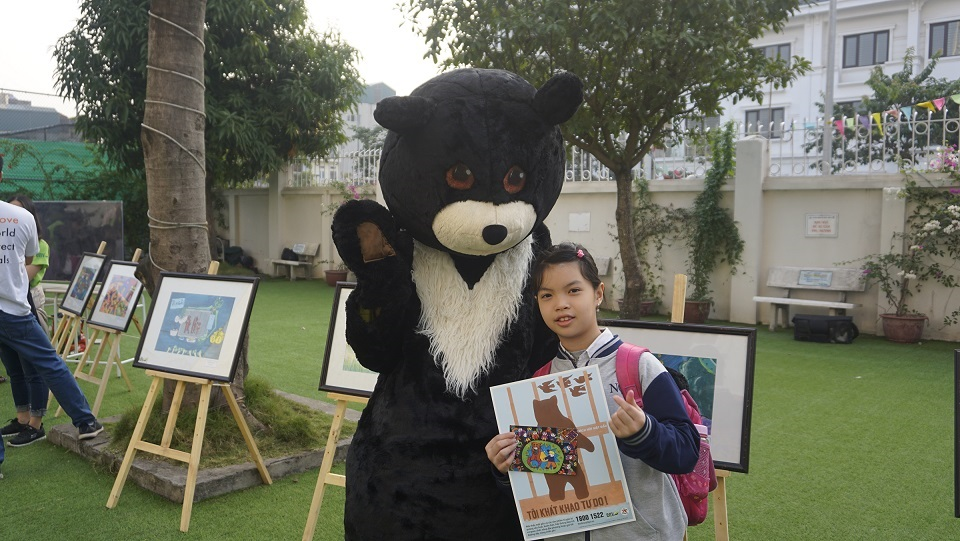
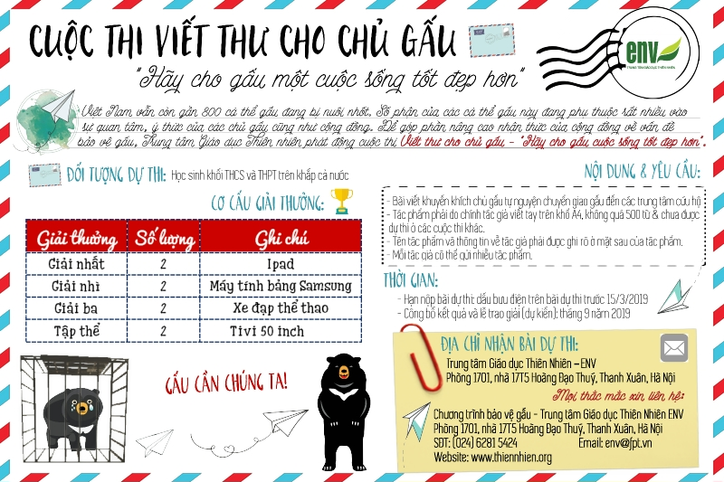

Cuộc thi viết thư cho chủ gấu Hãy cho gấu cuộc sống tốt đẹp hơn

Lần cập nhật cuối lúc Thứ ba, 19 Tháng 5 2020 08:20 Viết bởi Administrator Thứ ba, 18 Tháng 12 2018 07:41
Với sự đa dạng sinh học độc đáo được công nhận trên toàn thế giới, Việt Nam là nơi cư trú của nhiều loài động vật quý hiếm. Tuy nhiên, nhu cầu tiêu thụ các sản phẩm từ động vật hoang dã (ĐVHD) ở Việt Nam đang gia tăng một cách đáng kể trong những năm gần đây, làm suy giảm số lượng quần thể ĐVHD trong tự nhiên, khiến nhiều loài đang phải đối mặt với nguy cơ tuyệt chủng, đặc biệt là loài gấu.

Tình trạng nuôi nhốt gấu lấy mật từng rất phổ biến tại Việt Nam. Năm 2005, cả nước có tới hơn 4,300 cá thể gấu bị nuôi nhốt tại hàng trăm cơ sở trên khắp cả nước. Hơn 10 năm qua, những nỗ lực của cơ quan chức năng, các tổ chức phi chính phủ và cộng đồng nhằm chấm dứt tình trạng nuôi nhốt gấu lấy mật đã đạt được những bước tiến đáng kể. Theo số liệu của Bộ Nông nghiệp và Phát triển nông thôn Việt Nam, đến nay chỉ còn gần 800 cá thể gấu bị nuôi nhốt tại các trang trại trên cả nước, giảm khoảng 80% so với năm 2005. Nhu cầu sử dụng mật gấu cũng giảm hơn 60%, giai đoạn 2009 – 2014 theo theo khảo sát gần nhất của ENV. Điều này cho thấy Việt Nam đang đi đúng hướng trên chặng đường chấm dứt hoạt động nuôi nhốt gấu. Tuy nhiên, cuộc chiến bảo vệ gấu chỉ kết thúc khi tất cả các trang trại nuôi nhốt gấu ở Việt Nam đóng cửa vĩnh viễn, đem lại cơ hội sống sót cho các cá thể gấu còn lại trong tự nhiên và giúp gấu thoát khỏi nguy cơ bị săn bắt, giết hại nhằm phục vụ nhu cầu tiêu thụ mật gấu và các sản phẩm khác từ gấu. Để làm được điều đó, GẤU CẦN CHÚNG TA. Hãy thể hiện sự quan tâm của bạn đến loài động vật đáng yêu này và cùng chung tay hành động để thay đổi nhận thức của cộng đồng, đặc biệt là các chủ gấu nhằm đảm bảo một tương lai tốt hơn cho gấu bằng cách tham gia cuộc thi viết thư cho chủ gấu mang tên “Hãy cho gấu cuộc sống tốt đẹp hơn” do Trung tâm Giáo dục Thiên nhiên (ENV) tổ chức.
Mặc dù đã đạt được những thành tựu đáng kể trong hoạt động chấm dứt nạn nuôi nhốt gấu lấy mật ở Việt Nam, cả nước vẫn còn gần 800 cá thể gấu đang bị nuôi nhốt, lớn hơn gấp nhiều lần số lượng gấu còn lại trong tự nhiên. Số phận của các cá thể gấu này đang phụ thuộc rất nhiều vào sự quan tâm, ý thức của cộng đồng, đặc biệt là các chủ gấu.
Để huy động sự quan tâm của cộng đồng trong các nỗ lực bảo vệ gấu cũng như kêu gọi các chủ gấu chuyển giao gấu tự nguyện đến các cơ sở cứu hộ, ENV phát động cuộc thi Viết thư cho chủ gấu - “Hãy cho gấu cuộc sống tốt đẹp hơn”
I. Điều kiện tham gia
Để tham gia cuộc thi, các ứng viên phải đáp ứng các điều khoản và điều kiện liệt kê dưới đây.
1. Đối tượng dự thi
Tất cả học sinh các trường THCS và THPT trên khắp Việt Nam (từ 11 đến 17 tuổi)
2. Nội dung và các yêu cầu đối với tác phẩm dự thi
- Nội dung bài dự thi phải tập trung vào chủ đề viết thư cho chủ gấu, khuyến khích họ sớm tự nguyện chuyển giao gấu cho các trung tâm cứu hộ.
- Tác phẩm dự thi phải do chính tác giả viết và chưa được dự thi ở các cuộc thi khác hay công bố trên các phương tiện truyền thông.
- Tác phẩm dự thi phải được viết tay trên giấy khổ A4, không quá 500 từ.
- Tên tác phẩm và thông tin về tác giả (tên, tuổi, tên trường, địa chỉ trường, điện thoại) phải được ghi rõ ở mặt sau của tác phẩm.
- Mỗi tác giả có thể gửi nhiều tác phẩm.
Tất cả các tác phẩm dự thi sẽ được gửi trực tiếp về Ban giám hiệu Nhà trường. Các trường sẽ tranh giải dựa vào số lượng và chất lượng bài thi, ưu tiên yếu tố chất lượng. Mỗi trường sẽ tự chọn ra tối đa 10 tác phẩm xuất sắc nhất để tranh giải cá nhân. Để đủ điều kiện tham gia cuộc thi, các trường phải gửi lại toàn bộ tác phẩm dự thi cùng với 10 bài xuất sắc nhất về ENV.
3. Thời gian
- Hạn nộp bài dự thi: dấu bưu điện trên bài dự thi trước ngày 15 tháng 3 năm 2019
- Công bố kết quả và lễ trao giải (dự kiến): tháng 9 năm 2019

II. Cơ cấu giải thưởng
ENV sẽ trao 6 giải thưởng cá nhân và 2 giải tập thể đến các cá nhân và nhà trường xuất sắt nhất trong cuộc thi.
- Giải thưởng Số lượng Ghi chú
+ Giải Nhất 2 Ipad
+ Giải Nhì 2 Máy tính bảng
+ Giải Ba 2 Xe đạp thể thao
+ Tập thể 2 Tivi
III. Quyền sở hữu trí tuệ
ENV là đơn vị duy nhất giữ bản quyền đối với các tác phẩm dự thi, có toàn quyền sử dụng tất cả các tác phẩm dự thi cho các chiến dịch và ấn phẩm của mình.
IV. Địa chỉ nhận bài dự thi
Bài dự thi xin gửi về:
Trung tâm Giáo dục Thiên Nhiên – ENV
Phòng 1701, nhà 17T5 Hoàng Đạo Thuý, Thanh Xuân, Hà Nội
V. Liên hệ
Mọi thắc mắc liên quan đến thể lệ cuộc thi, cơ cấu giải thưởng và các nội dung khác vui lòng liên hệ:
Chương trình bảo vệ gấu
Trung tâm Giáo dục Thiên Nhiên – ENV
Phòng 1701, nhà 17T5 Hoàng Đạo Thuý, Thanh Xuân, Hà Nội
Số điện thoại: 04 46281 5424
Email:
Địa chỉ email này đã được bảo vệ từ spam bots, bạn cần kích hoạt Javascript để xem nó.
Xem chi tiết cuộc thi theoitnbk.edu.vn đây
http://thiennhien.org/tin-hoat-dong/1661-cuoc-thi-viet-thu-cho-chu-gau
- 19/05/2020 08:06 - Đại học Quốc gia TP HCM chỉ tổ chức 1 đợt thi đánh…
- 05/08/2019 00:00 - Tiếp nhận hồ sơ xét chọn trao học bổng "Tiếp sức đ…
- itnbk.edu.vn
- 13/07/2018 00:00 - Trương Nhật Nguyên Bảo đạt điểm xét tốt nghiệp THP…
- 13/07/2018 00:00 - Cô học trò mê lịch sử và giấc mơ làm luật sư
- 02/04/2018 08:40 - Học sinh Quảng Nam tham gia cuộc thi tiếng Anh Hội…
- 13/03/2018 14:25 - Học sinh Quảng Nam vào bán kết cuộc thi Thực hiện …
- 26/10/2017 00:00 - 58 học sinh vào đội tuyển thi học sinh giỏi quốc g…